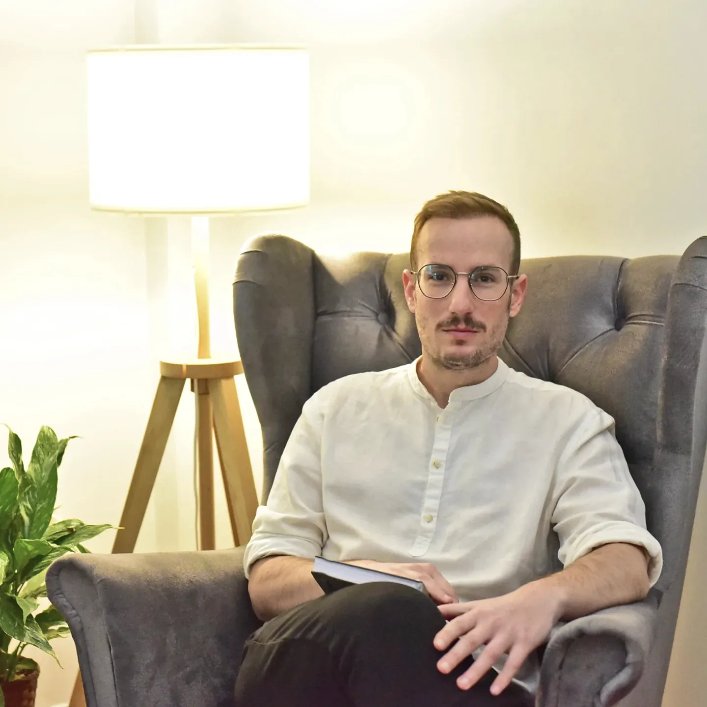
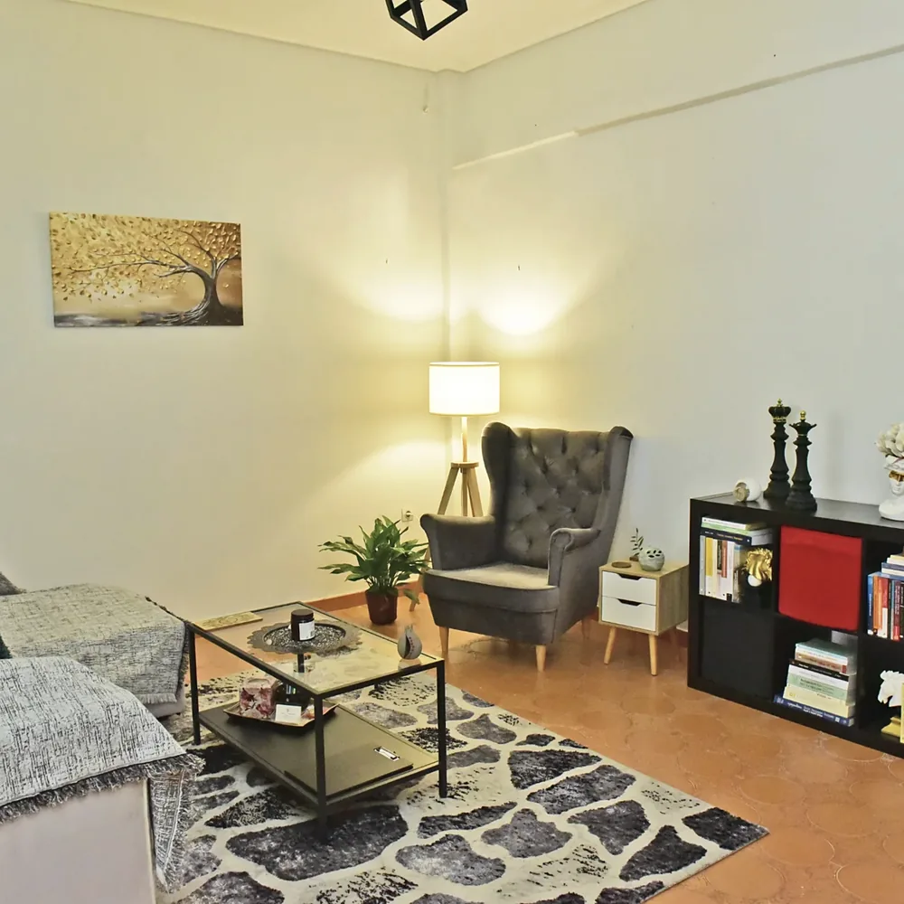
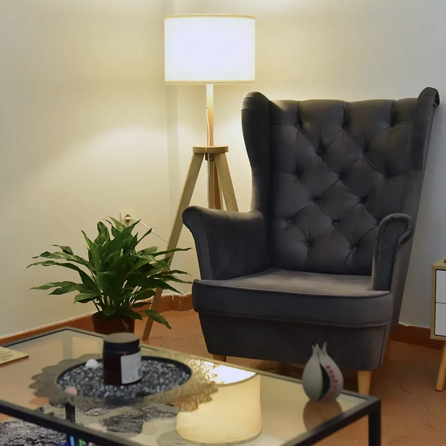
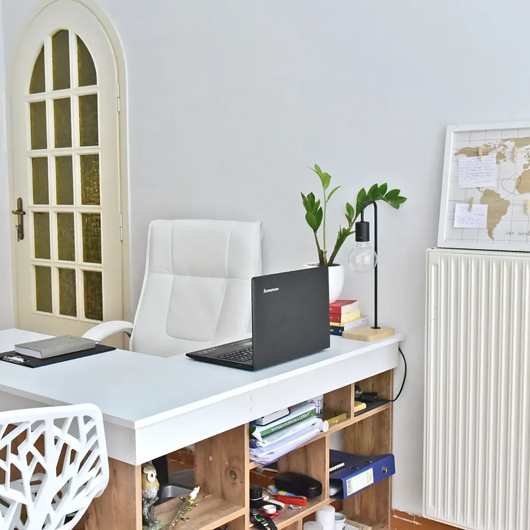

★★★★★
Ο Παναγιώτης είναι ένας εξαιρετικός ψυχοθεραπευτής. Ήρεμος και πάντα με το χαμόγελο είναι εκεί για να σε ακούσει. Οι συνεδρίες μαζί του με βοήθησαν πολύ και ειλικρινά τον συστήνω με κλειστά μάτια!

Ψυχολόγος – Ψυχοθεραπευτής · Περιστέρι
Ατομική Γνωσιακή Συμπεριφορική Θεραπεία (CBT), θεραπεία EMDR, θεραπεία ζεύγους και θεραπεία παιδιών και εφήβων — σε ένα ήρεμο και ασφαλές πλαίσιο, λίγα λεπτά με τα πόδια από το μετρό Ανθούπολη.
Υπηρεσίες
Η θεραπεία ξεκινά από αυτό που σας απασχολεί σήμερα. Δουλεύουμε μαζί, με ρυθμό που σας ταιριάζει, με σαφείς στόχους και σεβασμό στη δική σας ιστορία.
Ειδικό κόστος για ανέργους και φοιτητές.
Για όποιον περνά μια δύσκολη περίοδο: άγχος που δεν υποχωρεί, πεσμένη διάθεση, πίεση στη δουλειά ή στο σπίτι, δυσκολίες στις σχέσεις ή απλώς η επιθυμία να γνωρίσετε καλύτερα τον εαυτό σας. Στις πρώτες συνεδρίες χαρτογραφούμε τι συμβαίνει και θέτουμε μαζί τους στόχους. Στη συνέχεια δουλεύουμε με τις σκέψεις, τα συναισθήματα και τις συνήθειες που συντηρούν τη δυσκολία, με πρακτικά εργαλεία που μπορείτε να εφαρμόσετε στην καθημερινότητά σας — πάντα σε ένα πλαίσιο εμπιστοσύνης, χωρίς κριτική, όπου μπορείτε να μιλήσετε ελεύθερα.
Όταν οι ίδιοι καβγάδες επιστρέφουν ξανά και ξανά, όταν η επικοινωνία έχει γίνει σιωπή ή ένταση, ή όταν η σχέση περνά μια μετάβαση — μια μετακόμιση, ένα παιδί, μια απώλεια, μια κρίση εμπιστοσύνης. Οι συνεδρίες είναι ένας ουδέτερος χώρος όπου ακούγονται και οι δύο. Εξετάζουμε τα μοτίβα που επαναλαμβάνονται ανάμεσά σας, πώς τα βιώνει ο καθένας, και δοκιμάζουμε νέους τρόπους να μιλάτε και να λύνετε τις διαφωνίες σας. Στόχος δεν είναι να βρεθεί ποιος φταίει, αλλά να καταλάβετε τι χρειάζεται η σχέση σας.
Τα παιδιά και οι έφηβοι συχνά δείχνουν αυτό που τους απασχολεί μέσα από τη συμπεριφορά τους: απόσυρση, ξεσπάσματα θυμού, δυσκολίες στο σχολείο, φόβους ή αλλαγές στον ύπνο. Η θεραπεία τους δίνει έναν ασφαλή χώρο για να βάλουν σε λέξεις όσα νιώθουν και να μάθουν τρόπους διαχείρισης που ταιριάζουν στην ηλικία τους. Η δουλειά στηρίζεται στη μετεκπαίδευση στην προαγωγή της ψυχικής υγείας παιδιών και εφήβων και σε εξειδικευμένα σεμινάρια Γνωσιακής Συμπεριφορικής Θεραπείας για αυτές τις ηλικίες. Οι γονείς είναι μέρος της διαδικασίας: κρατάμε τακτική επαφή, ώστε ό,τι κερδίζεται στις συνεδρίες να συνεχίζεται και στο σπίτι.
Μερικές φορές το πιο χρήσιμο βήμα είναι η στήριξη των ίδιων των γονιών. Η συμβουλευτική γονέων απευθύνεται σε μητέρες και πατέρες που θέλουν να κατανοήσουν καλύτερα τη συμπεριφορά του παιδιού τους, να βάλουν όρια χωρίς διαρκείς συγκρούσεις, να διαχειριστούν μια δύσκολη περίοδο — έναν χωρισμό, τον ερχομό ενός αδελφού, την εφηβεία — ή απλώς να νιώσουν πιο σίγουροι στον ρόλο τους. Δουλεύουμε πάνω σε συγκεκριμένες καθημερινές καταστάσεις και αναζητούμε λύσεις που ταιριάζουν στη δική σας οικογένεια.
Θεραπευτικές προσεγγίσεις
Τα ονόματα των θεραπειών συχνά ακούγονται τεχνικά. Επιλέξτε μία για να δείτε τι είναι, πώς μοιάζει μια συνεδρία και πότε μπορεί να βοηθήσει.
Μια οργανωμένη, εμπιστευτική συνεργασία ανάμεσα σε εσάς και σε έναν εκπαιδευμένο θεραπευτή. Μέσα από τη συζήτηση και συγκεκριμένες τεχνικές, κατανοείτε καλύτερα αυτό που σας απασχολεί και βρίσκετε νέους τρόπους να το διαχειριστείτε.
Η CBT ξεκινά από μια απλή ιδέα: οι σκέψεις, τα συναισθήματα και η συμπεριφορά μας συνδέονται μεταξύ τους. Όταν αλλάζουμε τον τρόπο που ερμηνεύουμε μια κατάσταση ή τον τρόπο που αντιδρούμε σε αυτήν, αλλάζει και το πώς νιώθουμε. Είναι μια πρακτική, στοχευμένη και καλά ερευνημένη προσέγγιση.
Το EMDR (Eye Movement Desensitization and Reprocessing — απευαισθητοποίηση και επανεπεξεργασία μέσω οφθαλμικών κινήσεων) είναι μια μέθοδος για την επεξεργασία δύσκολων ή τραυματικών εμπειριών. Ενώ φέρνετε για λίγο στο μυαλό μια ανάμνηση, ακολουθείτε ένα αμφίπλευρο ερέθισμα — για παράδειγμα, το χέρι του θεραπευτή που κινείται δεξιά και αριστερά. Αυτό βοηθά τον εγκέφαλο να επεξεργαστεί την ανάμνηση, ώστε να μείνει ανάμνηση αλλά να μη φέρνει πια την ίδια ένταση.
Η CAT συνδυάζει στοιχεία της γνωστικής και της αναλυτικής θεραπείας. Εξετάζει τα μοτίβα που επαναλαμβάνονται στη ζωή και στις σχέσεις μας — συχνά διαμορφωμένα από νωρίς — και το πώς μας κρατούν «κολλημένους». Η δουλειά ακολουθεί τρία βήματα: περιγράφουμε μαζί το μοτίβο, μαθαίνετε να το αναγνωρίζετε τη στιγμή που συμβαίνει και βρίσκετε νέους τρόπους να βγείτε από αυτό.
Στη θεραπεία ζεύγους ο «θεραπευόμενος» είναι η ίδια η σχέση. Έρχονται και οι δύο σύντροφοι και ο θεραπευτής βοηθά ώστε ο καθένας να ακουστεί και να κατανοήσει τον άλλον. Η προσέγγιση στηρίζεται σε εκπαίδευση στη θεραπεία ζεύγους υπό το πρίσμα των τριών κυριότερων ψυχοθεραπευτικών ρευμάτων.

Σχετικά
Ψυχολόγος – Ψυχοθεραπευτής · αριθμός άδειας 720797
Ο Παναγιώτης Μπάνος είναι ψυχολόγος με άδεια ασκήσεως επαγγέλματος και διατηρεί ιδιωτικό γραφείο στο Περιστέρι. Σπούδασε Ψυχολογία στο Πανεπιστήμιο του Στρασβούργου και ολοκλήρωσε διετή εκπαίδευση στη Γνωστική Αναλυτική Ψυχοθεραπεία από την Πανελλήνια Ένωση Γνωστικής και Αναλυτικής Ψυχοθεραπείας (ΠΕΓΑΨ).
Έχει καταρτιστεί στη Γνωσιακή Συμπεριφορική Θεραπεία από το Εθνικό και Καποδιστριακό Πανεπιστήμιο Αθηνών και από το Κέντρο Εφαρμοσμένης Ψυχοθεραπείας και Συμβουλευτικής, στη θεραπεία τραύματος με τη μέθοδο EMDR, καθώς και στη θεραπεία ζεύγους και συντροφικών σχέσεων υπό το πρίσμα των τριών κυριότερων ψυχοθεραπευτικών ρευμάτων, από το Ευρωπαϊκό Ινστιτούτο Συμβουλευτικής και Ψυχοθεραπείας.
Στον τομέα παιδιών και εφήβων έχει ολοκληρώσει μετεκπαίδευση στην προαγωγή της ψυχικής υγείας τους από το Πανεπιστήμιο Δυτικής Αττικής και εξειδικευμένα σεμινάρια Γνωσιακής Συμπεριφορικής Θεραπείας για αυτές τις ηλικίες από την Εταιρεία Γνωσιακών και Συμπεριφορικών Σπουδών. Έκανε την πρακτική του άσκηση στο κέντρο «Άνιμα» και συνεργάζεται με κέντρα ειδικών θεραπειών, προσφέροντας ατομική θεραπεία ενηλίκων, θεραπεία ζεύγους, συμβουλευτική γονέων και θεραπεία παιδιών και εφήβων.
Ο χώρος
Ζεστό φως, άνετες πολυθρόνες και ιδιωτικότητα. Το γραφείο βρίσκεται στην οδό Θεοκρίτου στο Περιστέρι, σε μικρή απόσταση με τα πόδια από τους σταθμούς μετρό Ανθούπολη και Περιστέρι.


Κριτικές
Ο Παναγιώτης είναι ένας εξαιρετικός ψυχοθεραπευτής. Ήρεμος και πάντα με το χαμόγελο είναι εκεί για να σε ακούσει. Οι συνεδρίες μαζί του με βοήθησαν πολύ και ειλικρινά τον συστήνω με κλειστά μάτια!
Εξαιρετικός επαγγελματίας, με έκανε από τη πρώτη στιγμή να νιώσω άνετα για να συζητήσω τα θέματα μου, αν και είχα αρνητική προγενέστερη εμπειρία από ψυχολόγους. Ο Παναγιώτης είναι πλήρως καταρτισμένος, αποπνέει ηρεμία και ανθρωπιά και θα συνεχίσω σίγουρα.
Πρόκειται για έναν εξαιρετικά χαμογελαστό, φιλικό και ήρεμο άνθρωπο. Αισθάνομαι πάντοτε άνετα μαζί του καθώς από την πρώτη στιγμή μπόρεσα να συζητήσω ότι με απασχολούσε. Είμαι ευγνώμον για την πολυτιμη βοήθεια του αλλά και την σχέση που έχουμε αναπτύξει όλον αυτο τον καιρό.
Είναι τόσο θετική η αύρα που εκπέμπει ο κος Μπάνος που από την πρώτη κιόλας συνεδρία έφυγα με μια νότα αισιοδοξίας ! Τον συστήνω ανεπιφύλακτα, ήρεμος και αναλυτικός,είναι εξαιρετικός!
Ο Παναγιώτης είναι εξαιρετικός επιστήμονας και πάνω από όλα άνθρωπος ! Πέρασα μια πάρα πολύ δύσκολη φάση στη ζωή μου και ο Παναγιώτης με βοήθησε να την ξεπεράσω . Συνεπής στη δουλειά του και η μέθοδος που ακολουθεί με βοηθάει να εξελιχτώ και να μάθω τον εαυτό μου. Σε ευχαριστώ για όλα
Η συνεργασία μου με τον Παναγιώτη ήταν σταθμός στην πορεία της θεραπείας. Μου έχει προσφέρει πολύτιμη βοήθεια στην προσπάθεια να διαχειριστώ προσωπικές δυσκολίες, να ενδυναμωθώ, να κατανοήσω τον εαυτό μου, να αναπτύξω πιο ουσιαστική σχέση με τους ανθρώπους μου, και να οδηγήσω τη ζωή μου στην κατεύθυνση που επιθυμώ. Σε ευχαριστώ πολύ.
Πολύ καλός θεραπευτής, με γνώσεις, σωστή προσέγγιση και ανθρωπιά! Αγαπάει τον άνθρωπο και προσπαθεί να βοηθήσει με τον καλύτερο τρόπο!
Άψογος επαγγελματίας με βαθιά γνώση και ενσυναίσθηση. Δημιουργεί ένα ασφαλές κ υποστηρικτικό περιβάλλον για ουσιαστική ψυχοθεραπεία.
Οι κριτικές παρουσιάζονται αυτούσιες.
Ερωτήσεις
Στο τηλέφωνο 698 475 7432 ή online μέσω του Doctoranytime, όπου βλέπετε τις διαθέσιμες ώρες. Ένα ραντεβού μπορεί να ακυρωθεί έως 12 ώρες πριν από την ώρα του.
Η ατομική συνεδρία διαρκεί 50 λεπτά. Οι συνεδρίες ζεύγους και οι συνεδρίες EMDR διαρκούν 60 λεπτά. Συνήθως συναντιόμαστε μία φορά την εβδομάδα και η συχνότητα συμφωνείται μαζί.
Η πρώτη συνεδρία είναι μια γνωριμία. Μιλάτε για αυτό που σας φέρνει, με τον δικό σας ρυθμό· κάνω κάποιες ερωτήσεις για να κατανοήσω την κατάστασή σας και συζητάμε πώς μπορεί να βοηθήσει η θεραπεία και ποιο θα είναι το πλαίσιό της. Δεν υπάρχει καμία δέσμευση να συνεχίσετε.
Εξαρτάται από το τι θέλετε να δουλέψετε και από την προσέγγιση. Η CBT και η Γνωστική Αναλυτική Ψυχοθεραπεία είναι συνήθως δομημένες, με στόχους και χρονικό πλαίσιο που συμφωνούνται από την αρχή. Κάνουμε μαζί τακτικά απολογισμό της πορείας.
Το EMDR χρησιμοποιείται κυρίως για δύσκολες ή τραυματικές εμπειρίες που σας επηρεάζουν ακόμη σήμερα. Το αν ταιριάζει σε εσάς αξιολογείται στις πρώτες συνεδρίες· πριν από οποιαδήποτε δουλειά με αναμνήσεις προετοιμαζόμαστε πάντα με εργαλεία ασφάλειας και ηρέμησης.
Ναι. Η θεραπεία παιδιών και εφήβων χρησιμοποιεί τεχνικές προσαρμοσμένες στην ηλικία τους, και οι γονείς συμμετέχουν μέσα από τακτικές συναντήσεις. Οι γονείς μπορούν επίσης να έρθουν και μόνοι τους για συμβουλευτική γονέων.
Ναι. Όσα συζητάμε στις συνεδρίες είναι εμπιστευτικά, σύμφωνα με τον κώδικα δεοντολογίας των ψυχολόγων. Εξαιρέσεις υπάρχουν μόνο όπου τις ορίζει ο νόμος, για παράδειγμα όταν κινδυνεύει η ζωή κάποιου.
Ναι, υπάρχει ειδικό κόστος για ανέργους και φοιτητές. Η πληρωμή γίνεται με κάρτα ή με μετρητά στη συνεδρία.
Επικοινωνία
| Δευτέρα | 17:00–21:00 |
|---|---|
| Τρίτη | 17:00–21:00 |
| Τετάρτη | Κλειστά |
| Πέμπτη | 17:00–21:00 |
| Παρασκευή | 10:30–12:30 · 16:00–20:00 |
| Σάββατο | 10:00–13:00 |
| Κυριακή | Κλειστά |
Το γραφείο βρίσκεται στην οδό Θεοκρίτου 33 στο Περιστέρι, περίπου 5 λεπτά με τα πόδια (360 μ.) από τον σταθμό μετρό Ανθούπολη και 450 μ. από τον σταθμό Περιστέρι της Γραμμής 2. Σε απόσταση 2–3 λεπτών υπάρχουν αρκετές στάσεις λεωφορείων. Δεν διαθέτει ιδιωτικό χώρο στάθμευσης.